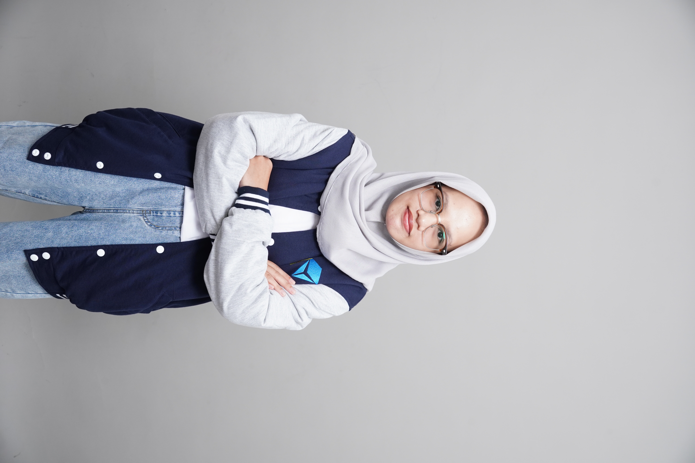

Skills
Python, HTML, CSS, Canva, Microsoft Office

Mahasiswa Rekayasa Keamanan Siber di Politeknik Negeri Batam yang memiliki ketertarikan pada web development, jaringan, dan keamanan sistem serta senang mempelajari hal-hal baru melalui praktikum dan proyek.
Introduction

Saya adalah mahasiswa semester III program studi Rekayasa Keamanan Siber di Politeknik Negeri Batam yang tertarik pada pengembangan web, jaringan, dan keamanan sistem. Melalui berbagai proses pembelajaran dan proyek akademik, saya terus berusaha mengembangkan keterampilan serta memperluas wawasan di bidang teknologi.
Python, HTML, CSS, Canva, Microsoft Office
Menempuh pendidikan di bidang keamanan siber.
Memiliki pengalaman dalam organisasi, praktikum, dan proyek akademik.